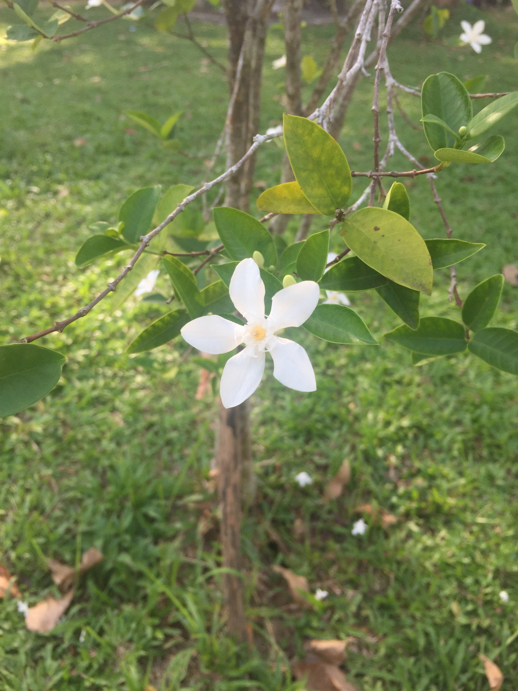
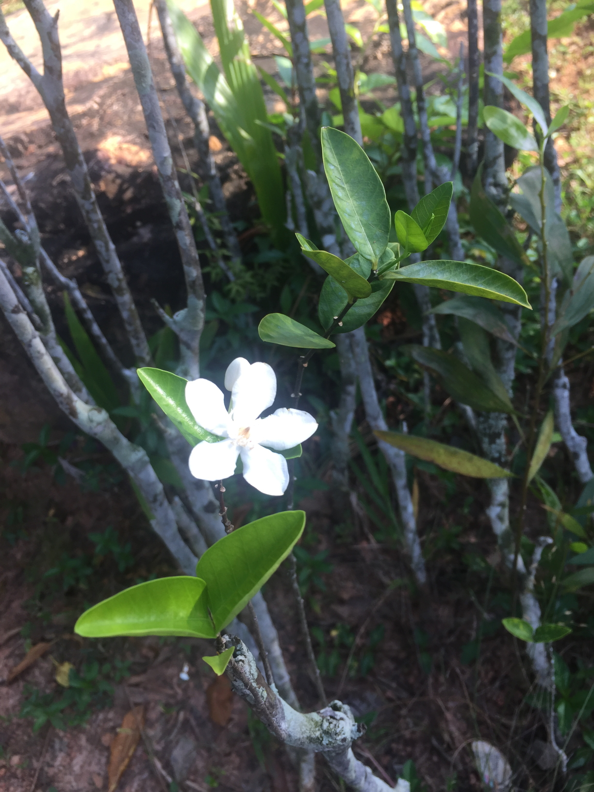
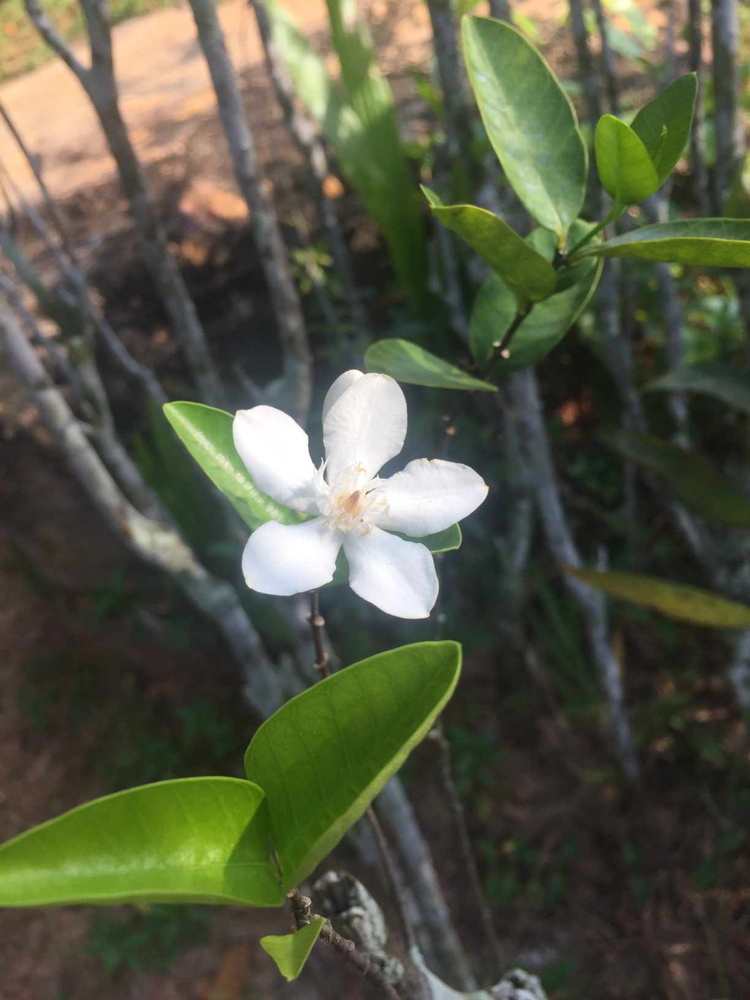
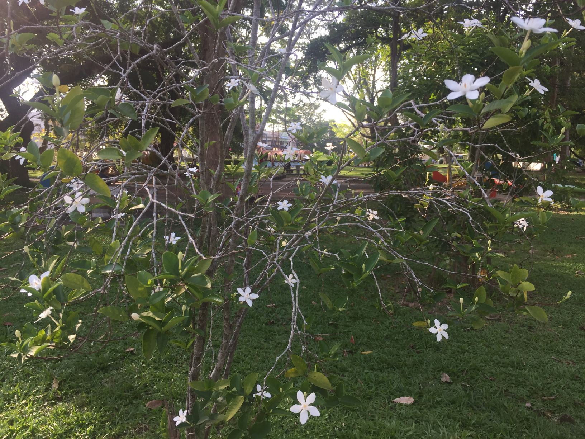

Sampaguita Jasmine (ดอกพุดเเก้ว)

ประวัติ
ดอกพุดแก้วเป็นดอกไม้ประจำชาติฟิลิปปินส์ ชื่อวิทยาศาสตร์ว่า Tabernaemontana divaricata ชื่อพื้นเมืองอื่น คือ พุดป่า (ลำปาง) พุดจีบ พุดซ้อน พุดสวน พุดสา (ภาคกลาง) ใบรูปไข่หรือกลมสีเขียวเป็นมัน ออกดอกเดี่ยวและเป็นช่อ บานตลอดทั้งปี ดอกสีขาวลักษณะเป็นแฉกคล้ายดาว มักบานในเวลากลางคืนและบานได้เพียงชั่วครู่ในตอนกลางวัน มีกลิ่นหอมแรงคล้ายดอกมะลิ สามารถนำมาผลิตเป็นน้ำมันหอมระเหย


ลักษณะ
ุดเป็นพรรณไม้ยืนต้นขนาดเล็ก ลักษณะเป็นพุ่มเตี้ย ลำต้นสูง 1-3 เมตร ผิวลำต้นมีสีขาวเทา แตกกิ่งก้านออกใบรอบต้น ใบเป็นใบเดี่ยว แตกออกเป็นคู่ตรงกันข้าม ตามข้อของกิ่ง ลักษณะของใบเป็นรูปมนรี ปลายใบแหลม ผิวใบเรียบสีเขียว ขนาดใบกว้าง 3-5 ซม. ยาว 8-12 ซม. ดอกเป็นดอกเดี่ยว ออกตามปลายยอดหรือปลายกิ่ง ช่อหนึ่งมี5-6 ดอก แล้วแต่ชนิดพันธุ์ ดอกมีกลิ่นหอมสีขาว กลีบดอกซ้อนเป็นชั้น ๆ หรือเรียงเป็นชั้นเดียวแล้วแต่ชนิดพันธุ์ ดอกบานมีความโต 2-5 ซม. ออกผลเป็นฝักรูปกระบอกแหลมโค้ง ภายในมีเมล็ด 3-5 เมล็ด
